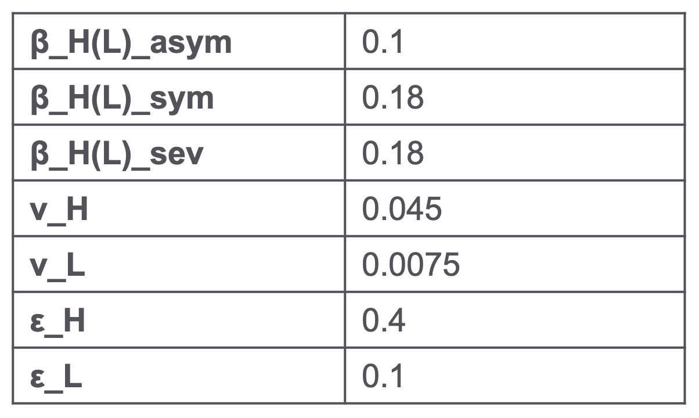
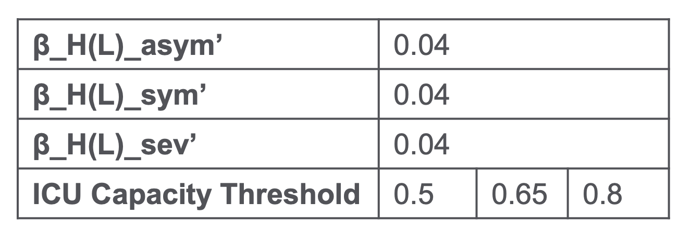
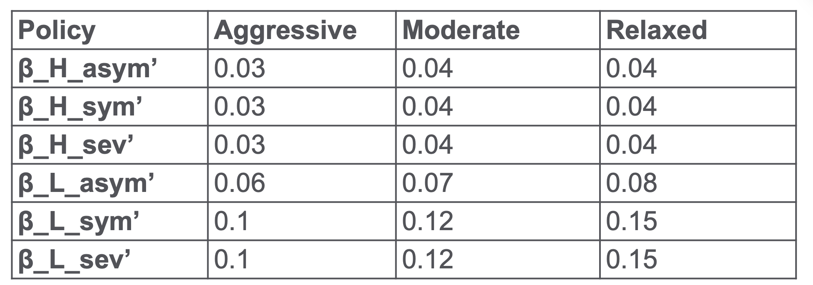

Adequate investigation was carried out to determine appropriate parameter values. Primarily based on the research papers and experiments referenced in the Background Reading section, we gathered data for the three models as outlined below.
Data collected for the Benchmark Model:
Data collected for the Uniform Social Measure (USM) Model:
Data collected for the Group-specific Measure (GSM) Model:
